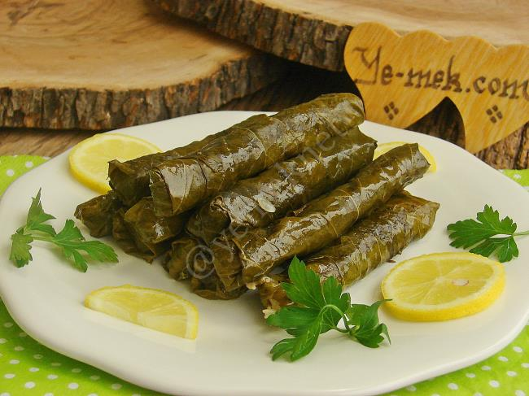

Anasayfa
Zeytinyağlı Yaprak Sarma Tarifi

Zeytinyağlı Sarma Tarifi İçin Malzemeler
- 1 kg asma yaprağı (salamura veya taze)
İç harcı için;
- 1 çay bardağı zeytinyağı (125ml)
- 3 adet kuru soğan
- 1 adet domates rendesi
- 2 su bardağı pirinç
- 2 yemek kaşığı dolmalık fıstık
- 2 yemek kaşığı kuş üzümü
- 1 yemek kaşığı kuru nane
- 1 tatlı kaşığı toz şeker
- 1 tatlı kaşığı tuz
- 1 çay kaşığı karabiber
- 1 çay kaşığı karabiber
- 1 çay kaşığı tarçın
- 1 avuç maydanoz
- 1,5 su bardağı sıcak su (300ml)
Üzeri İçin;
- Yarım limon suyu
- Limon dilimleri
- 2 yemek kaşığı zeytinyağı
- 1 tatlı kaşığı toz şeker
- 2,5 su bardağı sıcak su (500ml)
Zeytinyağlı Sarma Tarifi Nasıl Yapılır?
- Öncelikle (üzüm yaprağı)asma yapraklarını suya alarak tuzunun çıkması için bekletelim. Ne kadar çok tuzlu ise o kadar bekletmeniz yararınıza olur hatta suyunu değiştirip tekrar bekletebilirsiniz. Ben saracağım zaman bir kaç saat önceden yaprakları çıkarıp suya alıyorum.
- Tencereye zeytinyağını alarak yemeklik doğradığımız soğanları, fıstık ve kuş üzümlerini kavuralım.
- Şekeri ekleyip soğanlar şeffaflaşıncaya kadar kavuralım.
- Yıkanmış pirinci de ilave edip kavurmaya devam edelim.
- Domates rendesi, tuz ve baharatları ekleyip karıştıralım.
- Suyu ilave edip iç harcı suyunu çekinceye kadar kısık ateşte pişirelim. Ve harcı ocaktan alalım.
- Küçük küçük doğradığınız maydanozu da ilave ederek karıştıralım.
- Artık yaprakları sarmaya geçebiliriz. Sarma işlemini fotolarda detaylı olarak anlatmaya çalıştım.
- Yaprakları düz bir yere serelim. İçerisine çok fazla olmayacak şekilde yaprağın büyüklüğüne göre iç malzemesini koyalım.
- Yanlarını kapatarak sigara böreği gibi saralım.
- Sardığımız yaprakları tencereye düzenli bir şekilde dizelim. Ben dizme işlemini genelde tüm yaprakları sardıktan sonra yapıyorum. Artan yaprakları veya sararken arada çıkan kaba yaprakları ayırıp tencerenin tabanına bir sıra diziyorum.
- Bütün yaprakları sıraladıktan sonra üzerlerine limon dilimleri yerleştirelim. Yarım limonun suyunu sıkalım. Zeytinyağı ve şekeri ekleyelim.
- Sarmaların üzerine gelecek kadar su ilave edelim. (Benim tenceremde yaklaşık 1.5 bardak yetti) ve üzerini varsa artan yapraklarla kapatalım. Dolma taşı da kullanabilirsiniz, böylelikle dolmalar buharıyla daha güzel ve eşit bir şekilde pişmiş olur.
- Kaynadıktan sonra kısık ateşte sık sık suyunu kontrol ederek suyunu çekinceye kadar pişirelim.
Not:Yaprak iyice yıkandıktan sonra bile tuzlu ise iç malzemesi daha az tuz eklemenizi tavsiye ederim.